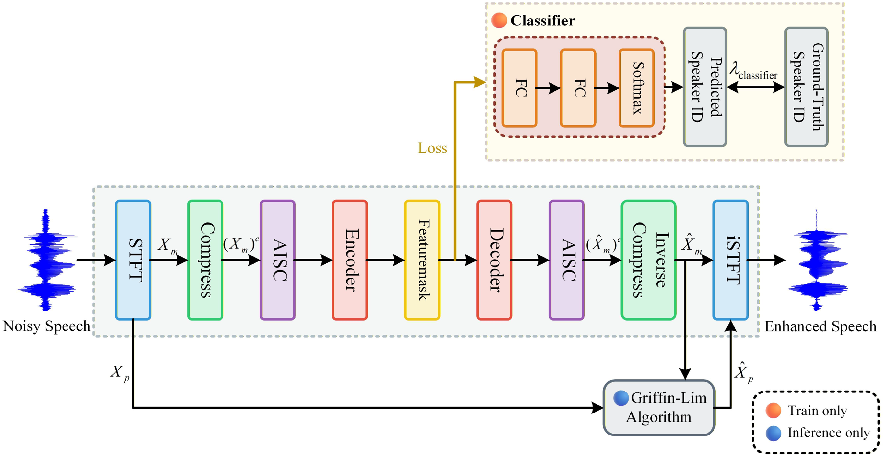
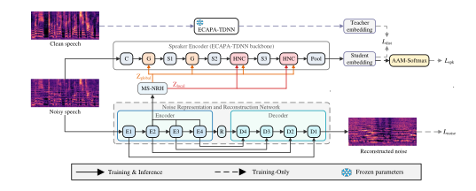

Speech Enhancement
Lightweight speech enhancement with state-space model and depthwise separable convolution
Digital Signal Processing, 2026
Undergraduate in Computer Science
School of Computer Science and Technology
Beijing Jiaotong University
I am an undergraduate student in Computer Science at Beijing Jiaotong University.
In 2027, I will join the School of Computer Science and Technology at the University of Science and Technology of China (USTC) as a Ph.D. student in Computer Science, advised by Prof. Lei He (IEEE Fellow).

Speech Enhancement
Digital Signal Processing, 2026

Speaker Verification
Interspeech 2026OralCCF B
* Equal contribution.
School of Computer Science and Technology
Ph.D. in Computer Science (Incoming)
2027 – 2032Expected
School of Computer Science and Technology
Undergraduate in Computer Science
2023 – 2027Expected graduation